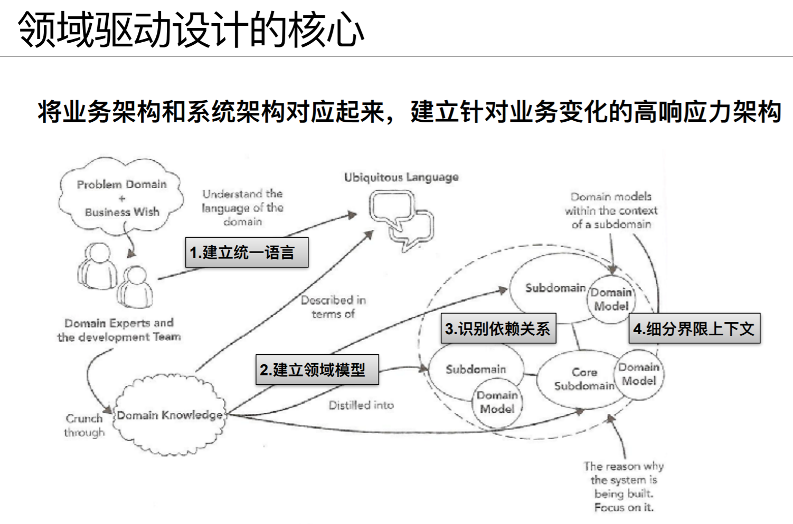

DDD
Abstract |
Domain Driven Design |
Category |
learning note |
Authors |
Walter Fan |
Status |
WIP as draft |
Updated |
2025-03-15 |
1. 背景
技术经常更新换代, 语言层出不穷, 这些都会过时, 淘汰和更新换代, 可以业务逻辑及商业模型不会轻易废弃, 因为它是企业安身立命, 生存和赚钱的根本, 需要小心维护, 应用户的需求, 企业未来的发展而增强和改进。
而商业模型和业务逻辑如何能映射到软件系统中呢?答案就是领域模型, 它是软件设计的核心, 指导着我们如何实现, 如何编码。
所谓领域主要就是指业务逻辑, 规则和流程所对应的的软件设计模型, 对于那些重要的, 复杂的业务模型称为核心域, 相对次要的模型称为支撑子域, 这些领域都有一个边界上下文, 使用一种通用语言来描述。
领域的边界, 彼此之间的关系以及集成方式使用上下文映射图来表示
领域驱动设计采用的架构不一而足, 视具体案例情况而定。比如分层架构, 端口和适配器, SOA, REST, CQRS, 事件驱动(管道和过滤器, 长时间处理过程, 事件源)
领域模型的基础是实体和值对象, 而对于它们的处理以及流程控制更适合用领域服务来表示, 而领域事件在不同的服务和系统之间用于集成和交互很有用。以模块来划分领域对象, 以聚合来整合相关的对象, 以工厂来创建对象, 以资源库来存取对象, 这些都是领域驱动设计中的核心。
领域对象模型
模型可以表示为
module/package
entity
value object
service
模型对象
通过 factory 来创建
通过 aggregate 来封装
通过 repository 来访问
用分层 layered architecture 来隔离领域
# 领域对象的生命周期
Aggregate
Factory
Repository
# 柔性设计
Intention=revealing interfaces
Assertion
Conceptual contour
Standalone class
Closure of operation